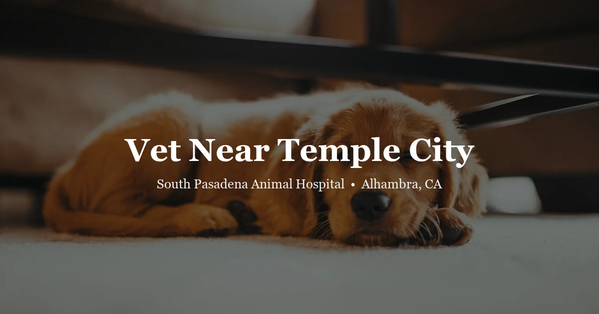

May 3, 2026 · 6 min read
Vet Near Temple City: Dogs, Cats, and Exotic Pets in the SGV

Temple City is a tight-knit community with a lot of pet owners — dogs, cats, the occasional rabbit, a surprising number of birds. What it doesn't have is a full-service animal hospital within its own city limits. That means most Temple City residents drive out for vet care, and if you've been searching for a good option nearby, South Pasadena Animal Hospital is worth knowing about. We also serve pet owners looking for veterinary care near Pasadena and surrounding communities.
We're at 3116 W Main St in Alhambra, about 10 minutes west of Temple City via Las Tunas Drive. We see dogs and cats for everything from annual wellness exams to sick visits, as well as rabbits, birds, reptiles, guinea pigs, and other exotic animals. Our Temple City vet page has the full details on what to expect when you come in.
The drive from Temple City to Alhambra
It's shorter than most people think. From the Las Tunas and Rosemead intersection — the center of Temple City for most residents — you're looking at roughly 10 minutes straight down Las Tunas to Alhambra. No freeway required. You can also take Valley Boulevard if you're coming from the southern end of Temple City near El Monte Avenue.
Our clinic is right on Main Street in Alhambra, with parking directly in front. There's no complicated parking structure or multi-level garage to navigate — just pull in and walk in. For families with anxious dogs or carriers full of cats, that matters.
What we see and treat
For dogs and cats, we handle the full range of routine and medical care: annual wellness exams, vaccinations, dental cleanings, bloodwork and diagnostics, skin and ear issues, gastrointestinal problems, wound care, and prescription medications. If your dog has been limping for a week or your cat stopped eating, those are exactly the kinds of visits we're here for.
A few things that set us apart from a basic clinic: we take time during wellness visits to actually talk through your pet's diet, behavior changes, and any low-grade concerns you've been brushing off. A 10-minute wellness exam that's really just a vaccine injection and out the door isn't the same as a real health conversation. Our team keeps detailed records and remembers your pet from visit to visit.
Exotic animals from Temple City
Quite a few Temple City households have rabbits, birds, reptiles, or guinea pigs — and finding good care for these animals in the SGV is genuinely harder than finding a dog and cat vet. Most general practice clinics in the area don't see exotics at all, or they see them infrequently enough that exotic care isn't really their depth.
We see a range of exotic pets regularly, including:
- Rabbits — wellness exams, dental issues, GI stasis, spay/neuter. Our rabbit vet page covers the details.
- Birds — parrots, cockatiels, conures, finches, lovebirds, budgies. See our bird vet page.
- Reptiles — bearded dragons, leopard geckos, ball pythons, blue-tongued skinks. Details on our reptile vet page.
- Guinea pigs and chinchillas — dental problems, respiratory issues, and weight monitoring are common concerns.
- Hamsters and small mammals — short lifespans mean wellness exams matter; we also handle tumors, dental overgrowth, and wet tail.
If you have an exotic pet and aren't sure whether we can see them, call us at (626) 441-1314. We'll give you a straight answer.
What a first visit looks like
New patients fill out a brief intake form either online or when they arrive. The exam itself is a real head-to-tail assessment — not a rushed five-minute look-over. We check weight, listen to heart and lung sounds, assess teeth and gum health, palpate the abdomen, look at eyes and ears, and go through any concerns you've brought in. If bloodwork or X-rays are warranted, we'll discuss why before running them.
Pricing is transparent. Our pricing page has exam fees listed so you're not walking in blind. We know that vet costs add up, and we'd rather give you accurate expectations upfront than hand you a surprise bill at checkout.
Why Temple City pet owners make the short drive
The SGV has no shortage of veterinary options, and we're not the only clinic within driving distance of Temple City. What we hear from clients who've switched to SPAH after trying other places — and this comes up often enough to mention — is that the difference is in how the visit actually feels. Someone who knows your pet's history. A doctor who explains findings rather than just listing a treatment plan. Staff who remember that your dog is anxious about other dogs in the waiting room.
None of that is a guarantee, of course — you should come in and see for yourself. But it's what we aim for with every appointment.
Dental care for dogs and cats
Dental disease is one of the most common and most overlooked health problems in dogs and cats. By age three, most pets have some degree of tartar buildup and early gum disease — which, left untreated, leads to tooth loss, pain, and systemic infections. Annual dental cleanings under general anesthesia allow us to scale below the gumline and extract teeth that are causing problems.
We also do dental assessments at every wellness exam, so if your dog's teeth are heading in the wrong direction, you'll know before it becomes a serious problem. Many Temple City dog owners haven't had their dogs' teeth professionally cleaned since they got them — if that sounds like you, it's worth asking about at your next visit.
Vaccinations and wellness for Temple City pets
California law requires rabies vaccination for dogs and cats. Beyond that, we tailor vaccine recommendations to your pet's lifestyle — an indoor-only cat has different risk exposure than a dog who hikes Eaton Canyon every weekend. We don't vaccinate every pet identically; we base it on where your animal goes and what they're likely to encounter.
For dogs, core vaccines include DA2PP (distemper, adenovirus, parvovirus, parainfluenza) and rabies. Bordetella is recommended for dogs with dog park or boarding exposure. Leptospirosis is worth considering for dogs in contact with wildlife or standing water — relevant in the foothill adjacent areas of the SGV. For cats, FVRCP (feline viral rhinotracheitis, calicivirus, panleukopenia) and rabies are core.
Our services page has a complete list of what we offer, and you can reach us to schedule at (626) 441-1314 or book online through our portal.
Questions from Temple City pet owners
Is there an animal hospital near Temple City?
Temple City doesn't have a full-service animal hospital within its city limits, but South Pasadena Animal Hospital in Alhambra is about 10 minutes west — easily reached via Las Tunas Drive or Valley Boulevard. We're at 3116 W Main St, Alhambra, CA 91801, reachable at (626) 441-1314.
What animals does South Pasadena Animal Hospital see?
We see dogs, cats, and a wide range of exotic animals — rabbits, birds (parrots, cockatiels, conures), reptiles (bearded dragons, leopard geckos, ball pythons), guinea pigs, chinchillas, hamsters, and tortoises. If you have an unusual pet, call us at (626) 441-1314 and we can confirm whether we are able to see them.
Do I need an appointment or do you take walk-ins?
Appointments are preferred and allow us to give your pet the time they need. We see urgent cases as quickly as possible. You can book through our online portal or call (626) 441-1314. For true emergencies outside our hours, a 24-hour emergency hospital in the area may be needed.
How much does a vet visit cost near Temple City?
Our pricing page has a breakdown of exam fees and common services — including exotic animal exam fees, which differ from standard pet visits. We believe in transparent pricing and are happy to answer questions before your appointment.
Does South Pasadena Animal Hospital see exotic pets from Temple City?
Yes. If you have a rabbit, bird, reptile, guinea pig, or other exotic animal and live in Temple City, we are one of the closer options for exotic pet care in the San Gabriel Valley. Call us at (626) 441-1314 to confirm availability for your species.